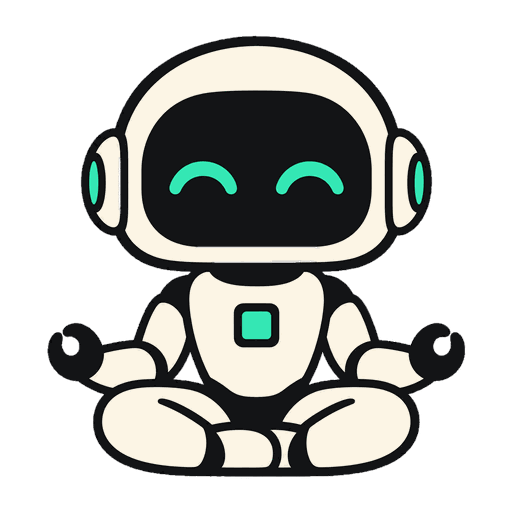

dwim
A coding agent that runs on your own GPU.
The agent, the model, and the engine that runs it, in one Rust program: no API key, no server, and nothing leaves your machine.
macOS on Apple silicon · Linux with Vulkan on x86-64 and ARM64
# start the shell in a project directory
$ dwim
# or ask one thing
$ dwim "what changed in the last commit?"
$ - A real coding agent
- A shell where the model runs commands, reads their output, and keeps going until the task is done. It follows your project's
AGENTS.md. - A 27B model in 6 GB
- Bonsai 2 27B, PrismML's ternary version of Qwen3.8-27B: every weight is -1, 0, or 1, so it fits on a laptop GPU.
- Its own inference engine
- No llama.cpp. Metal on macOS, Vulkan everywhere else, and a CPU reference the GPU kernels are tested against.
- No sandboxing
dwimassumes it is already running in a sandbox, such as a container or a VM, and does no sandboxing of its own: the model runs the commands it wants, without asking.